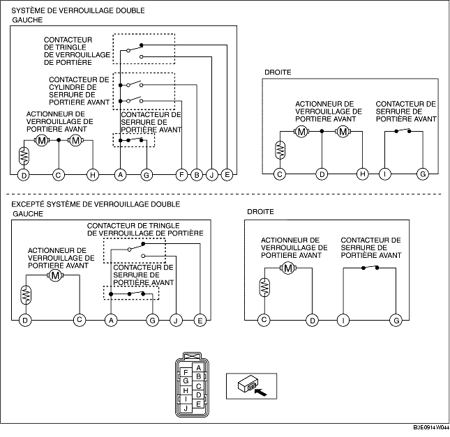

INSPECTION DE SERRURE ET D'ACTIONNEUR DE VERROUILLAGE DE PORTIÈRE AVANT
B3E091458490W04
1. Les actionneurs et contacteurs suivants sont intégrés à la serrure et à l'actionneur de verrouillage de portière avant. Inspecter la serrure et l'actionneur de verrouillage de portière avant en fonction de chaque procédure d'inspection au niveau des éléments suivants.
-
• Actionneur de verrouillage de portière avant (voir la section INSPECTION D'ACTIONNEUR DE VERROUILLAGE DE PORTIERE AVANT.)
-
• Contacteur de serrure de portière avant (voir la section INSPECTION DE CONTACTEUR DE SERRURE DE PORTIÈRE AVANT.)
-
• Contacteur de cylindre de serrure de portière avant (voir la section INSPECTION DE CONTACTEUR DE CYLINDRE DE SERRURE DE PORTIÈRE AVANT.)
-
• Contacteur de tringle de verrouillage de portière (voir la section INSPECTION DE CONTACTEUR DE TRINGLE DE VERROUILLAGE DE PORTIÈRE.)
